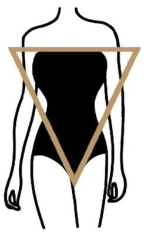

Your shape is
INVERTED TRIANGLE

Characteristics
Shoulders are noticeably wider than the hip-line
Shoulders may be straight, squared, and strong-looking
Bust can range from small to big
Little to no waist definition
Hips look straight and flat compared to broad shoulders
Bottom is rather flat
Great legs often come with this body shape
Body shape projects a sporty and athletic physique